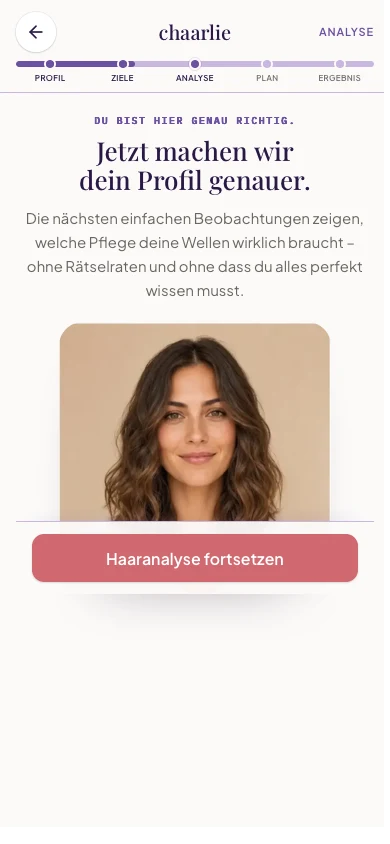

„Haaranalyse fortsetzen“ bleibt am mobilen Viewport
Dieselbe echte Produktionsansicht bei 390 × 844 in WebKit. Nur die Position des bestehenden CTA-Containers ändert sich; Text, Größe, Farbe, Inhalt und Quiz-Reihenfolge bleiben unverändert.

Interaktion: Der Inhalt darf weiterhin dezent einfahren. Der CTA selbst
bewegt sich dabei nicht, verschwindet nicht kurz und bleibt durchgehend antippbar.